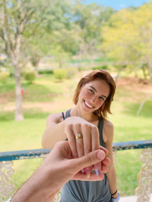

Antes de falar, vou postar duas imagens e escrever um pouquinho sobre elas, de fatos elas são as minhas fotos favoritas
Essa era a minha foto preferida da vida, nossa família. VocÊ não tem noção o quanto eu amo vocÊ, o quanto eu amo a Marilinha, e eu estou disposto de fazer tudo nessa vida por vocês duas amor. Você é íncrivel!
Antes a outra que era a minha foto preferida, agora essa é a mais. Antigamente brincava de te chamar de noiva, agora é verda, enfim somos noivos. E foi a melhor escolha da minha vida, dividir a casa com você e te ver todos os dias é a coisa preferida da minha vida inteira. Enfim, agora vou falar todos meu planos com vocÊ, e se prepara, que é longo!
Amor, como você sabe tenho um milhão de sonhos com você, um deles eu ja consegui realizar que foi virar seu noivo. O próximo obviamente é casar contigo, e isso esta muito perto de acontecer. Ter dois filhos talvez demore um pouquinho, mas com certeza o Bento e a Cecília vai vim com muita saúde para alegrar a nossa vida.
Agora vou falar de sonhos que vai se realizar recentemente, um deles é viajar, e isso obviamente vai acontecer muito na nossa vida ainda. Eu sei que ainda não fizemos muitas viagens, mas pode ter certeza que ainda vamos para ibitipoca (que esta muito perto de acontecer), Noronha, Jerí, e em varios lugares do Brasil e no mundo, mas onde é o meu foco principal em te levar é em Miami.
Amor, já que eu falei as coisas que vai ser realizadas jaja. Agora vou fazer uma declaração para você, minha vida, você tem que parar um pouco de se cobrar tanto, nossa vida já deu certo só de nós estarmos com nossa casinha morando juntos. Sei que você que fazer de tudo para ganhar dinheiro, mas tem que ter calma, Deus esta vendo o quanto você esta correndo e eu tenho a maior certeza do mundo que você vai ser recompensado. Você não tem noção o quanto to estudando e batalhando para as coisas darem certo e eu te dar uma vida melhor. Amor, eu sou muito apaixonado por você e não vejo a hora de falar “sim” em cima do altar com voce, não consigo acreditar até agora que vou realizar o maior sonho da minha vida.
Fiz esse site para eu treinar, e também para eu te fazer uma surpresa, eu espero que você goste. E eu imagino nós dois bem velhinhos, com vários netinhos na nossa casa em um almoço de família.
Desculpa se você não gostou de algo, fiz com muito carinho e é apenas um começo. Vou fazer muitos mais sites par vocÊ minha vida.
Enfim, do seu noivo, Bruno!
Dê a sua nota mo